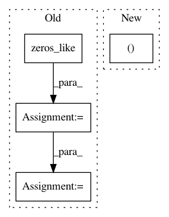

73e563ecaf915d073d8b8fabc4a568ecddb0ea11,keras/layers/recurrent.py,Recurrent,get_initial_states,#Recurrent#Any#,122
Before Change
def get_initial_states(self, X):
// build an all-zero tensor of shape (samples, output_dim)
initial_state = K.zeros_like(X) // (samples, timesteps, input_dim)
initial_state = K.sum(initial_state, axis=1) // (samples, input_dim)
reducer = K.zeros((self.input_dim, self.output_dim))
initial_state = K.dot(initial_state, reducer) // (samples, output_dim)
initial_states = [initial_state for _ in range(len(self.states))]
return initial_states
After Change
def get_initial_states(self, X):
// build an all-zero tensor of shape (samples, output_dim)
initial_state = X[:, 0, 0] * 0 // (samples, )
initial_state = K.pack([initial_state] * self.output_dim) // (output_dim, samples)
initial_state = K.permute_dimensions(initial_state, (1, 0)) // (samples, output_dim)
initial_states = [initial_state for _ in range(len(self.states))]
In pattern: SUPERPATTERN
Frequency: 3
Non-data size: 4
Instances
Project Name: keras-team/keras
Commit Name: 73e563ecaf915d073d8b8fabc4a568ecddb0ea11
Time: 2016-02-25
Author: farizrahman4u@gmail.com
File Name: keras/layers/recurrent.py
Class Name: Recurrent
Method Name: get_initial_states
Project Name: NifTK/NiftyNet
Commit Name: c8b28432a637a780eed96547260722ff3dede57e
Time: 2017-10-04
Author: wenqi.li@ucl.ac.uk
File Name: niftynet/engine/sampler_selective.py
Class Name:
Method Name: create_label_size_map
Project Name: chainer/chainercv
Commit Name: 4f9cfd059cdd34df5de57d34e931165e3a8d2f0f
Time: 2017-05-28
Author: yuyuniitani@gmail.com
File Name: chainercv/links/model/faster_rcnn/faster_rcnn_train_chain.py
Class Name: FasterRCNNTrainChain
Method Name: __call__